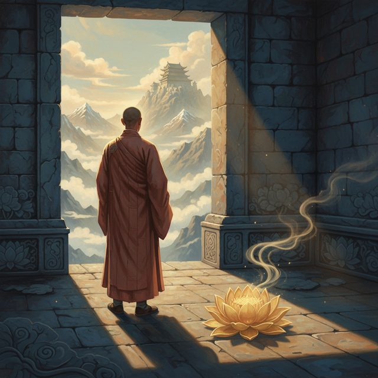
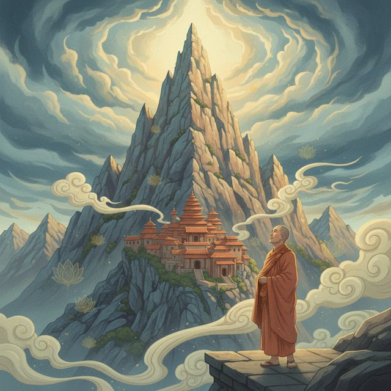
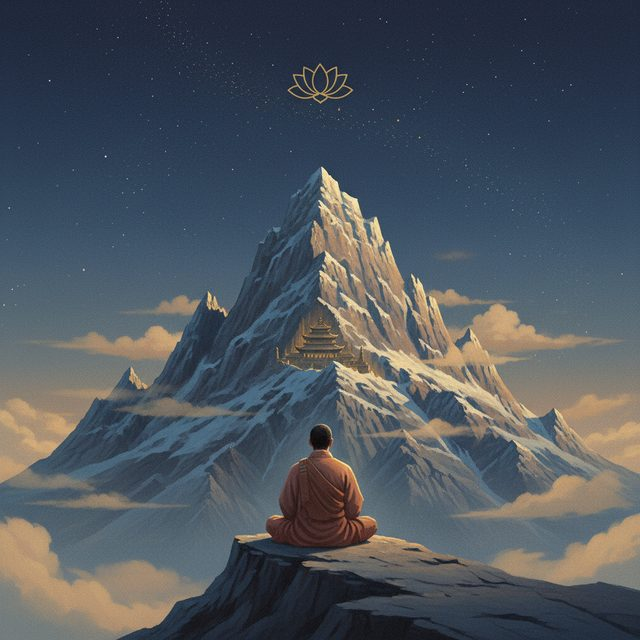
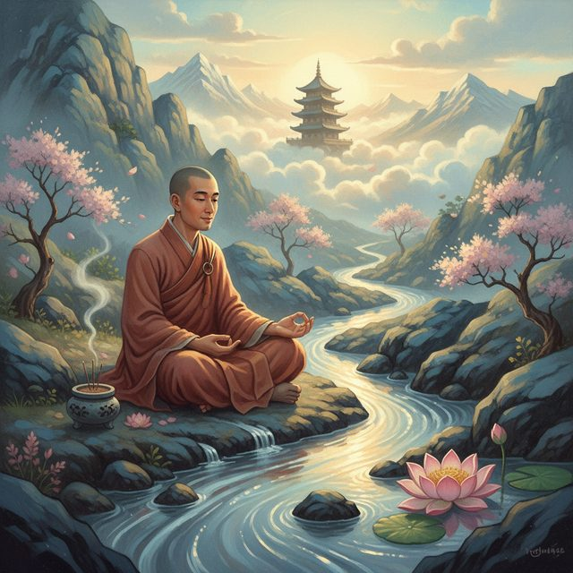
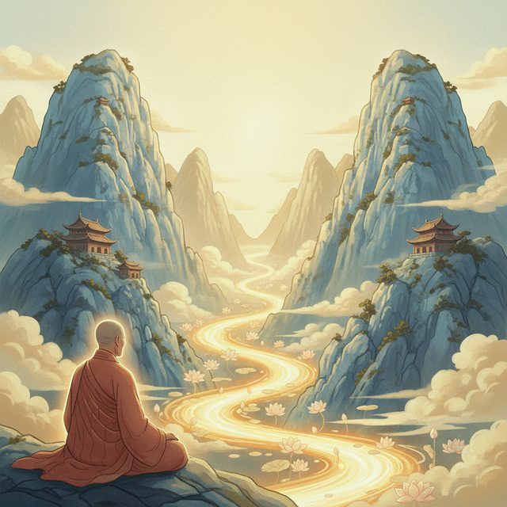
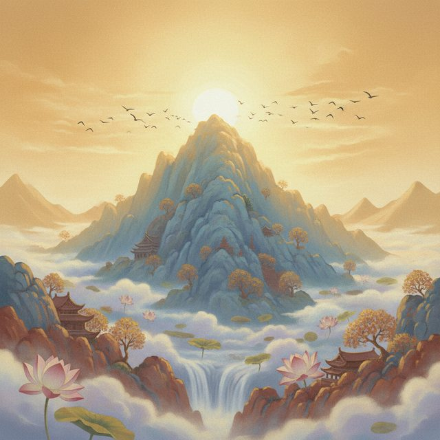
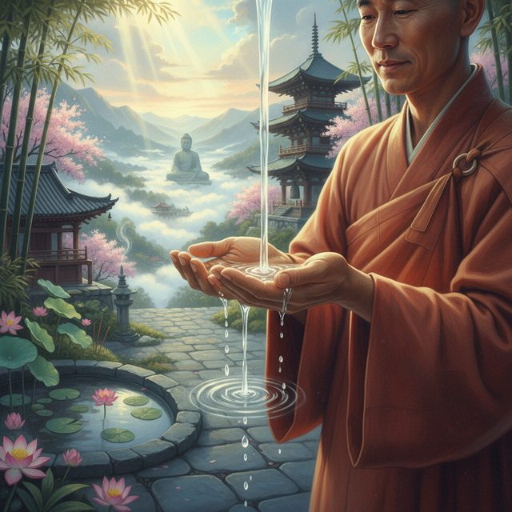
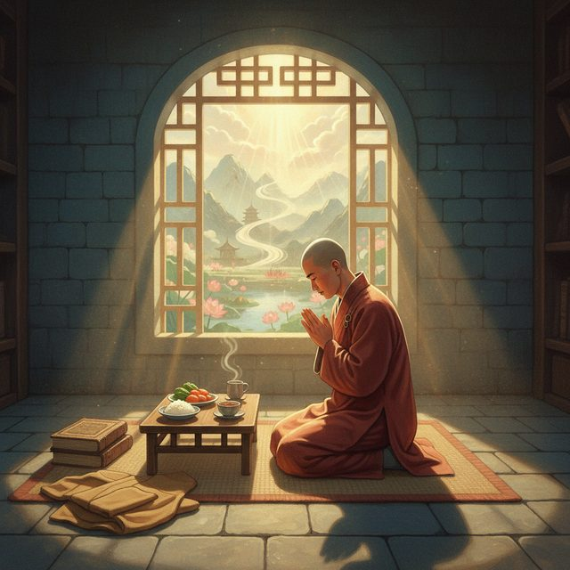
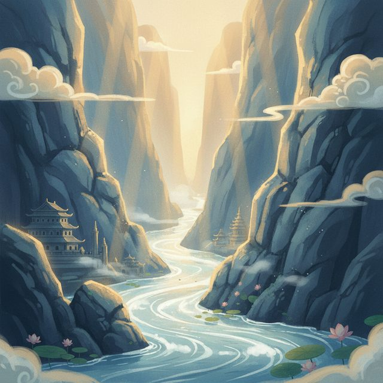
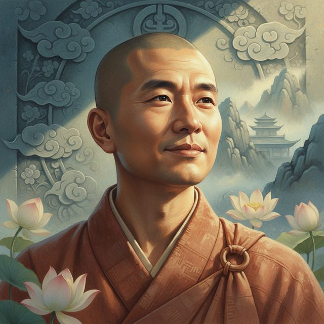

CH12-029 — images
【慈悲】自分に厳しすぎる｜厳しさが毒になる
ep
CH12
Script Viewer
snapshot
guide
台本
音声
サムネ
画像
CH12-029
画像
updated_at: 2026-01-13T09:30:14.308996Z
run_id:
CH12-029

CH12-029
正しさへの執着と孤立
CH12-029
高塔の上の寂しさ
CH12-029
実る稲穂の教え
CH12-029
山の物語への導入

CH12-029
野心的な山マウント

CH12-029
孤独な頂点の過酷さ
CH12-029
麓の豊かな谷バレー

CH12-029
水の流れに気づく

CH12-029
山と谷の対話

CH12-029
父なる山への変容
CH12-029
エゴの分離感の分析

CH12-029
本当の謙虚さとは

CH12-029
「おかげさま」の気づき

CH12-029
上善は水の如し
CH12-029
最強の人間関係戦略
CH12-029
謝ることの勇気
CH12-029
意識して谷に降りる

CH12-029
自信と傲慢の違い
CH12-029
心の中に谷を作る
CH12-029
感謝と願いの結び